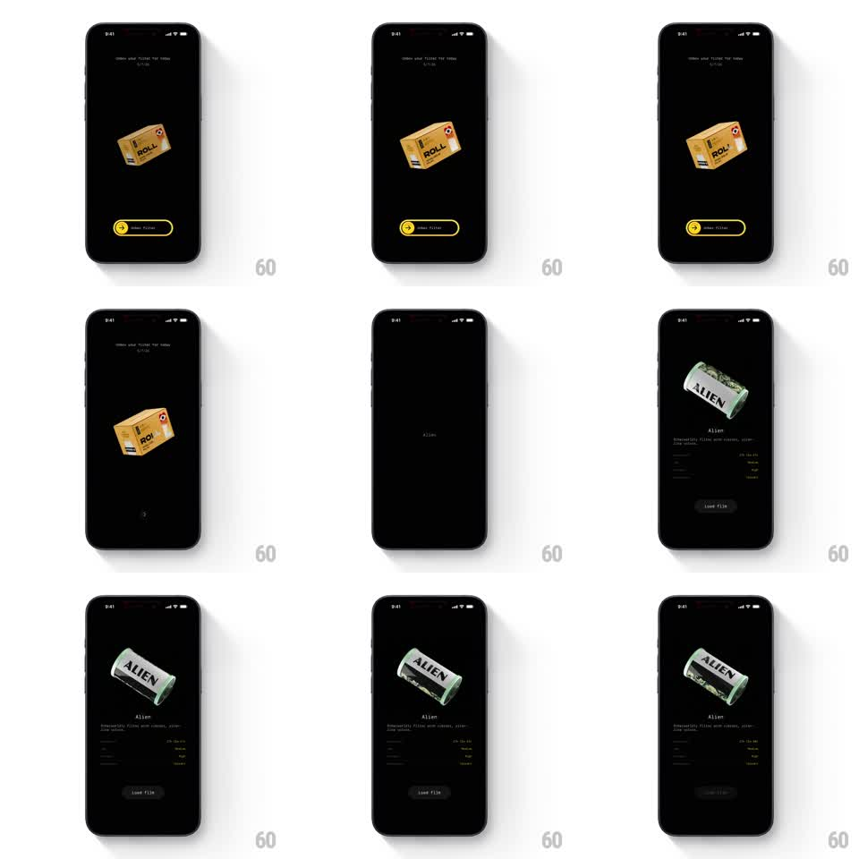

Media
Frame-by-frame

Rebuild this interaction 1:1: Roll's film unboxing - a 3D cardboard roll box tilts on black; a yellow "swipe right" slider confirms, the box cracks open and tumbles away, and the film canister (green "ALIEN" roll) pops out and lands over its spec sheet with a Load film button.

Rebuild this interaction 1:1: Roll's film unboxing - a 3D cardboard roll box tilts on black; a yellow "swipe right" slider confirms, the box cracks open and tumbles away, and the film canister (green "ALIEN" roll) pops out and lands over its spec sheet with a Load film button.
## Integration
Integration: stack-agnostic spec - springs given as stiffness/damping, timed motions as duration + curve; map every value to your framework and animation library of choice.
## Scene
Black product screen. Stage center: a 3D cardboard box with ROLL branding at a three-quarter tilt. Bottom: a yellow-outlined slider pill ("swipe right" with a chevron knob). Post-unbox: the film canister large at top, film name and description, a two-column spec grid, and a dark "Load film" button.
## Motion spec
Pattern: slider-confirmed 3D unboxing.
- Idle: the box slowly tilts (+/- 6deg on Y, 3s, ease-in-out) waiting for input.
- Slider: the knob tracks the finger 1:1; at 80% travel it snaps to the end (spring ~300/22), the pill fills yellow, and the box burst begins.
- The lid flips open (rotateX -110deg, 400ms, ease-in) and the box body drops and tumbles off-screen (translate +300px, rotate 40deg, 500ms, ease-in).
- The canister pops out from where the box sat (scale 0.3 -> 1, spring ~280/20, 450ms) with a single bounce, then settles into a slow idle spin (rotateY 360deg per 8s).
- Metadata fades up in reading order - name, description, spec rows (200ms each, 80ms stagger) - and Load film slides in last (250ms).
## Calibration
- The slider commit must feel like tearing the seal - the whole unbox chains off that one gesture.
- Canister spin is glossy 3D with real label wrap, not a 2D rotation fake.
## Reduced motion
Slider fills without snap; box fades out (250ms); canister fades in static with metadata (300ms).
## Don't miss
- The box and canister share one anchor point - the canister emerges exactly where the box was.
- The spec grid uses right-aligned highlighted values; it is part of the reveal, not pre-existing chrome.